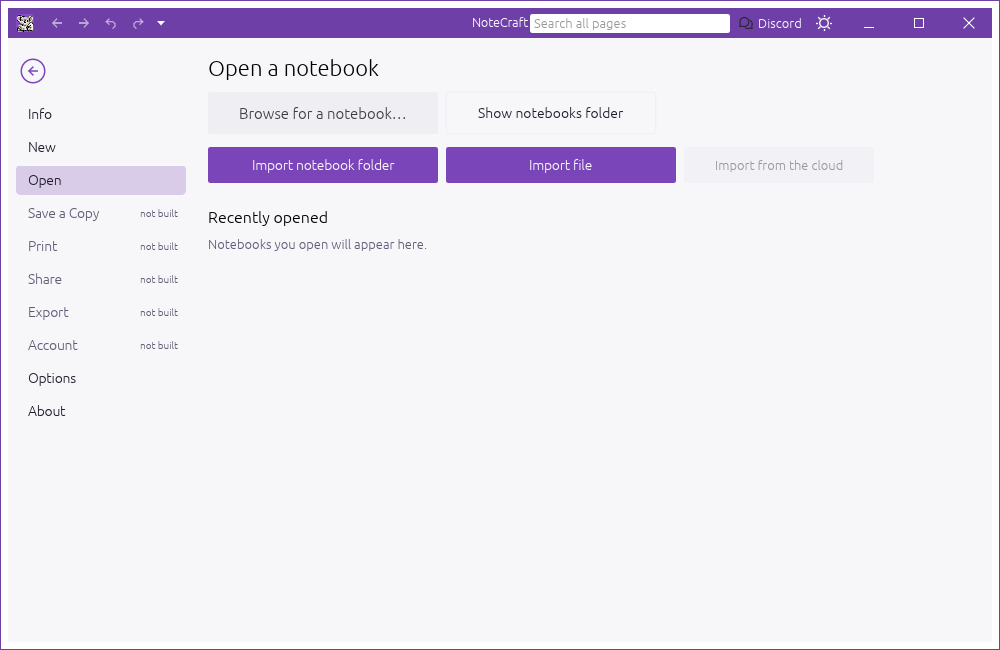
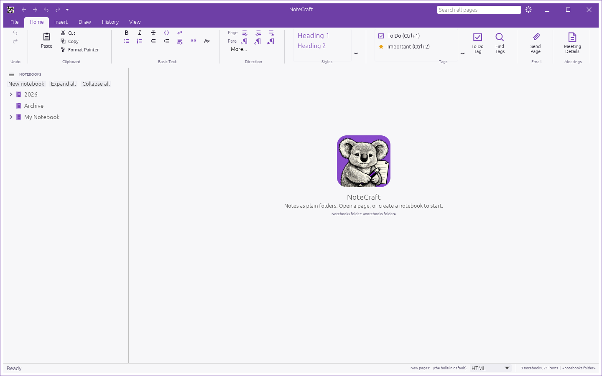
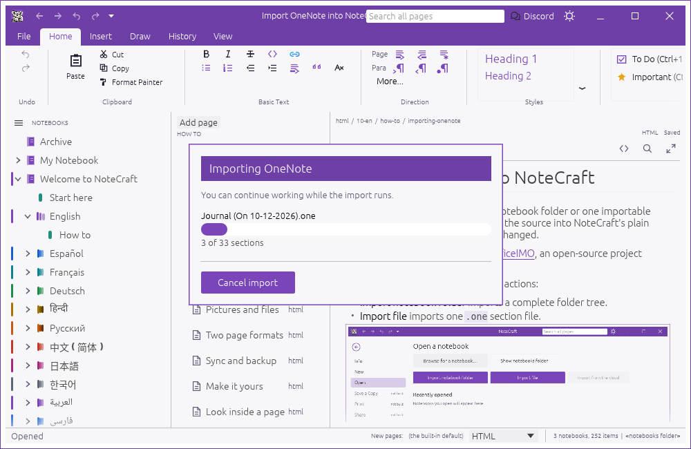

NoteCraft tam bir defter klasörünü ya da aktarılabilir tek bir dosyayı içe aktarabilir. OfficeIMO köprüsü kaynağı NoteCraft'ın düz klasör biçimine dönüştürür. Kaynak değişmeden kalır.
OneNote ayrıştırması, MIT lisansı altında dağıtılan açık kaynaklı bir proje olan OfficeIMO tarafından sağlanır.
Dosya > Aç'ta iki içe aktarma eylemini kullanın:
.one bölüm dosyasını içe aktarır.
Defter klasörünü içe aktar'ı seçin ve 2026 gibi bir klasör seçin. Klasör adı defterin adı olur. İç içe klasörler bölüm gruplarına, .one dosyaları ise bölümlere dönüşür. Sayfalar ve iç içe sayfalar adlarını ve hiyerarşilerini korur.
Dosyayı içe aktar'ı seçin ve tek bir .one dosyası seçin. NoteCraft, dosyanın adını taşıyan bir defter oluşturur ve içe aktarılan bölümü onun içine koyar.
NoteCraft, yapılandırılmış defterler klasörünün içinde hedefi oluşturur, başarılı bir içe aktarmadan sonra içe aktarılan defteri açar ve Son açılanlar'a ekler. Özgün OneNote dosyaları asla değiştirilmez. Bir ilerleme penceresi geçerli bölümü gösterir ve güvenle iptal etmenize izin verir.
Aynı adda bir defter zaten varsa, NoteCraft Windows tarzı bir sonek ekleyerek üzerine yazmaktan kaçınır: 2026, 2026 (1), 2026 (2) ve benzeri.
Klasör içe aktarmaları iç içe klasörlerin içinde ilerler. Klasörler bölüm gruplarına, .one dosyaları bölümlere dönüşür; sayfalar ve iç içe sayfalar adlarını ve hiyerarşilerini korur.

Bir içe aktarma çalışırken NoteCraft, geçerli bölümü, ilerleme sayısını ve bir İçe aktarmayı iptal et düğmesini gösteren tek bir temalı ilerleme penceresi gösterir.

Şifreli ya da desteklenmeyen bölümler, içe aktarılan defterin import-errors.txt dosyasında bildirilir. Bir klasör okunabilir ve desteklenmeyen dosyaların karışımını içerdiğinde, okunabilir bölümler yine de açılır.
Bu sayfa bir yapay zekâ modeli tarafından çevrildi. Düzeltmeler memnuniyetle karşılanır.